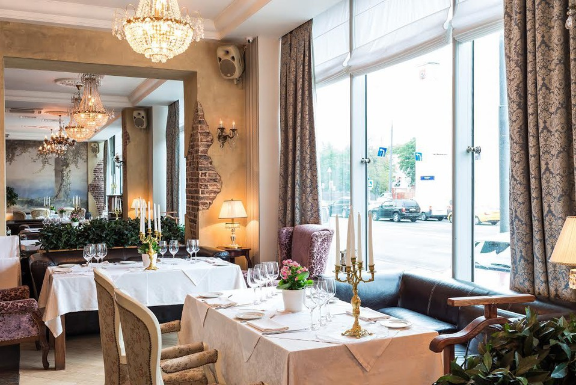

Black Swan
Добро пожаловать в ресторан «Чёрный Лебедь»!
Погрузитесь в атмосферу изысканности, вкуса и тайны...
Ресторан «Чёрный Лебедь» — это место, где классическая итальянская кухня встречается с утончённой подачей и магией вечеров. Мы бережно сочетаем традиции и авторский подход, создавая незабываемые впечатления для каждого гостя.
Мы — не просто ресторан. Мы — история, рассказанная в бокале красного вина, и вдохновение, спрятанное в аромате свежеприготовленной пасты.
Вдохновлённые эпохой барокко и готики, мы создали пространство, где каждая деталь — от свечей до блюд — говорит о любви к искусству вкуса.
Откройте для себя наш кулинарный хит-парад